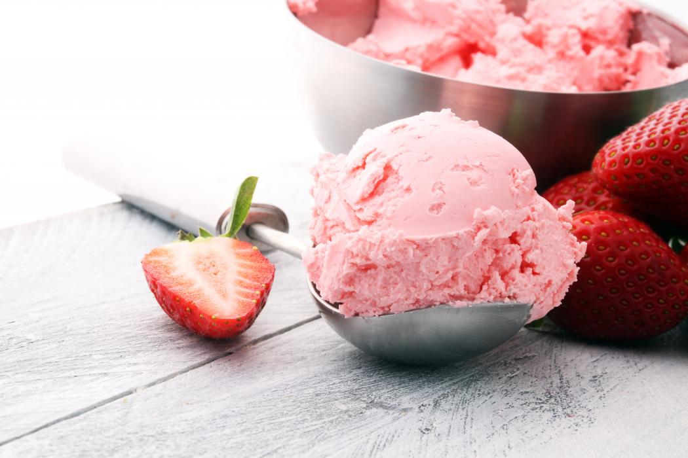

"Without ice cream, there would be darkness and chaos." — Don Kardong

Ingredients:
2 cup whole milk
2 cups heavy cream
1 cup white sugar
1/4 teaspoon salt
2 teaspoons vanilla extract
2 cups mashed fresh strawberries
2 drops red rood coloring (optional)
Directions:
In a large bowl, combine the milk, cream, sugar, salt, vanilla, strawberries, and food coloring. Pour the mixture into the freezer bowl of an ice cream maker, and freeze according to manufacturer's directions.